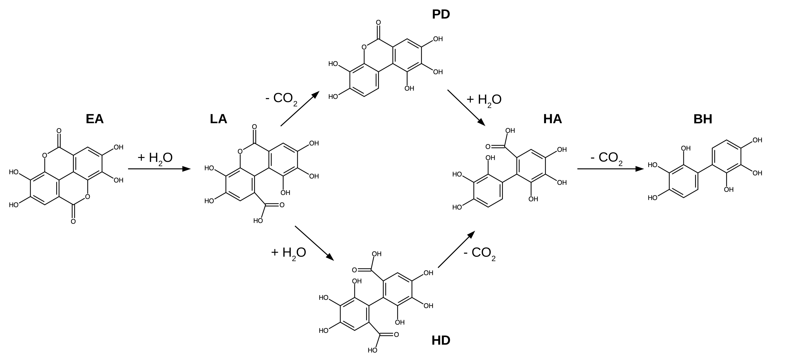
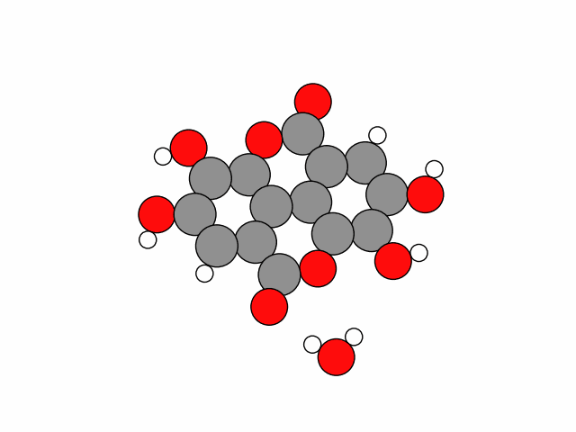
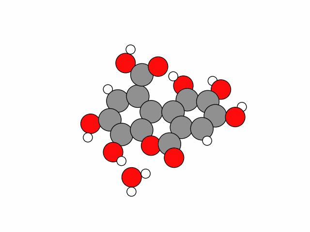
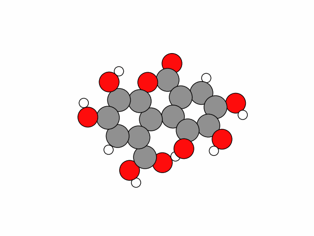
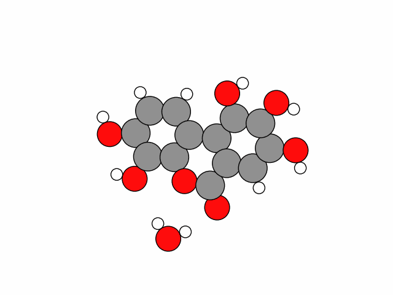
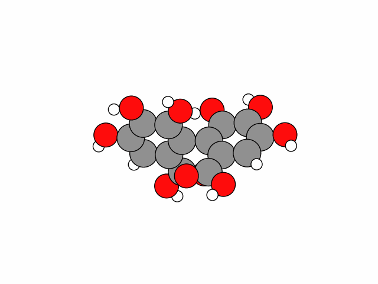
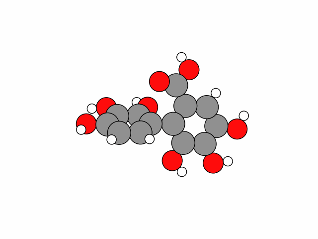

For each of the above reactions, the nudged elastic band method (NEB) enables us to find the minimum energy path of a reaction and the relevant geometries from reactants to product. We can stack these geometries to make a 'movie' of the reaction. This is an elegant and pleasing method to gain deeper insight into a reaction's mechanism and allows us to see if our chemical intuition really plays out or if there is another mechanism available with lower energy intermediates. Because ultimately by computing the energy of each geometry along the reaction path, we can see which mechanism is the energetically most favored and thus the most probable. Sometimes reinforcing our intuition and sometimes broadening our horizons.

First, the hydroxyl groups connected to the left aromatic ring rotate by about 180 degrees around the C-O bond (I), corresponding to a rotational transition state. Subsequently, the hydroxyl groups connected to the right side aromatic ring do the same (II), which also yields a rotational transition state. At this point, water can approach the molecule, the ester bond breaks and the lactonic ring opens (III). Water, respectively its oxygen atom, then bonds to the carbon of the carboxyl group, inherently breaking the O-H bond to one of the hydrogen atoms of water. This corresponds to the highest energy transition state. The H atom then bonds to the O atom of the neighboring aromatic ring, such that LA is formed in a stable but higher energy configuration. By rotation of the carboxyl group (IV), a lower energy structure can be achieved. For this rotation there also exists a rotational transition state.

Before the reaction occurs, the carboxyl and hydroxyl group interact by forming a hydrogen bond (I). This deforms and stiffens the molecule but also reduces steric hindrance on the site of reaction, concerning the incorporation of water. For the remaining process of the incorporation of water, the molecule will be locked in this position. That being said, water approaches the molecule and the ester bond breaks, opening the lactonic ring. Water bonds to the carbonyl group while breaking itself an O-H bond releasing an H atom (II). This represents the highest energy transition state of the reaction. The H atom then bonds to the neighboring oxygen connected to the neighboring aromatic ring. After this, the hydroxyl groups on the left aromatic ring rotate by approximately 180 degrees around their C-O bond (III), corresponding to a rotational transition state. Simultaneously, the lock introduced at step I via a hydrogen bond ends, such that the hydroxyl groups of the right ring are free to perform the same kind of rotation (IV) as in step (III), again corresponding to a rotational transition state. This way a stable intermediate of HD has been formed as geometry optimization and vibrational analysis show. But although it corresponds to a minimum on the PES, this structure does not correspond to the lowest energy configuration of HD. Meanwhile, the aromatic rings are free to counterrotate, meanwhile the H atom on the hydroxyl group of the carboxyl group transfers to the carbonyl oxygen (V), also corresponding to a first order saddle point on the PES.

The hydroxyl group on the carboxyl group rotates such that the O-H bond is oriented perpendicularly to the aromatic ring (I), corresponding to a rotational transition state. Then said O-H bond breaks, releasing a hydrogen atom which represents the highest energy transition state (II). The free hydrogen atom forms a new bond to the carbon the former carboxyl group is attached to, forcing the C-C bond to break and releasing carbon dioxide. The release of carbon dioxide could be favored through the interaction with the neighboring hydroxyl group with which the oxygen of carbon dioxide forms a hydrogen bond. According to organochemical literature this could favor the decarboxylation. The hydrogen bond can occur, because at this step carbon dioxide does not yet exist in its well-known linear form but a bent structure like water, thus possessing a non-zero dipole moment. The strength of the hydrogen bond increases, eventually forcing the O-H to break and temporarily connecting the hydrogen to an oxygen atom of carbon dioxide (III). This happens simultaneously with the breaking of the C-C bond between carbon dioxide and the aromatic ring. Indeed if one is to compare the Gibbs free energy of activation to the previous decarboxylations one can estimate the lowering in this reaction to be about -5 kcal/mol. After carbon dioxide has been released the C-O bonds of the hydroxyl groups connected to the neighboring ring reorient themselves by rotating about 180 degrees (IV), providing a lower energy configuration for the joint structure.

The hydrolysis of PD proceeds similarly to of LA.. Water approaches the molecule and the ester bond breaks, opening the lactonic ring. The oxygen of water forms a C-O bond with the carbonyl carbon and in turn breaks a single O-H bond releasing a hydrogen atom, corresponding to the highest energy transition state (I). Now, only a single bond connects the aromatic rings, making them free to counterrotate. On top of that, inside the carboxyl group, a hydrogen transfer from the hydroxyl to the carbonyl oxygen takes place (II), also corresponding to a transition state. The reaction ends with the aromatic rings being oriented perpendicular to each other, respectively the molecule's lowest energy configuration. Geometry optimization and vibrational analysis indeed show that between the two peaks of I and II a stable intermediate has formed. Such that peak II because the molecule transtitions a lowest energy configuration.

The hydroxyl group on the carboxyl group rotates to a position where the O-H bond is orientated perpendicular to the aromatic ring (I). Then the O-H bond breaks releasing a single H atom corresponding to the highest energy transition state (II). This H atom bonds to the carbon the former carboxyl group was bonded to and in turn leads to the release of carbon dioxide by forcing the C-C bond to break. Finally, the aromatic rings counterrotate (III), providing a lower energy structure.

As you can see, this reaction proceeds nearly equivalent to the decarboxylatino before. The hydroxyl group on the carboxyl group rotates such that the O-H bond is perpendicular to the plane of the aromatic ring (I). This corresponds to a rotational transition state. Then the O-H bond breaks and releases an H atom. This corresponds to the highest energy transition state (II) and the existence of a single imaginary frequency proves that it is indeed one. The hydrogen atom then forms a new bond with the aromatic carbon atom the former carboxyl group was bonded to, which in turn requires the C-C bond to break releasing carbon dioxide. Afterward, the decarboxylated molecule undergoes some structural rearrangements such that the C-O bond of the hydroxyl group closest to the neighboring ring rotates by nearly 180 degrees (III). Simultaneously, the aromatic rings counterrotate to a lower energy structure with a smaller angle between them.
For the above reaction, muliple different mechanisms were considered and the mechanism presented are those with the lowest energy transition states. That does not mean that different mechanisms are totally excluded, but energetically less likely to be followed. Take for example the hydrolysis of EA. This reaction can also persue a mechanism similar to the hydrolysis of LA and PD, but this results in a slightly higher energy transition state.
Concerning the reactants and products of all the above reactions the organic chemist might also add: Ok, you did that, but how about tautomeric forms? Indeed those were considered too, but did all provide higher energy structures, thus being less likely to play a role in the above reactions.